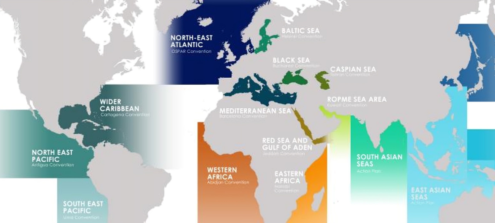
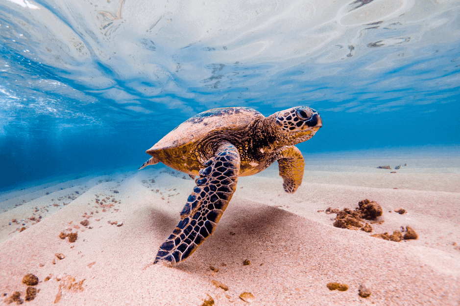
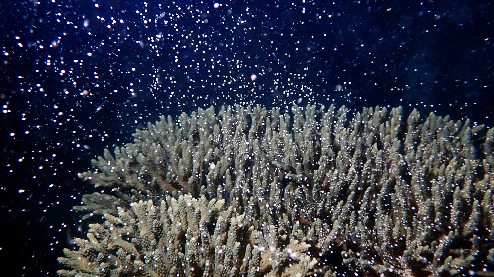

REGIONAL SEAS
What are Regional Seas?
Regional seas are large marine areas shared by multiple countries, managed through international agreements and initiatives. They play a vital role in sustaining marine biodiversity, supporting fisheries, and regulating the Earth's climate. Examples of regional seas include the Mediterranean Sea, the Caribbean Sea, and the Coral Triangle.

Why are Regional Seas Important?
Regional seas contribute significantly to the global environment and economy by supporting fisheries, regulating the climate, and serving as key biodiversity hotspots. They also act as natural carbon sinks, absorbing atmospheric CO2 and mitigating climate change. Furthermore, they sustain local economies by providing resources for tourism, trade, and coastal livelihoods.

Ecosystem and Biodiversity
Regional seas are home to diverse marine ecosystems, including coral reefs, mangroves, and seagrass beds. These ecosystems support a wide variety of marine species, some of which are critically endangered. For example, the Coral Triangle is known for hosting the highest diversity of coral species on Earth. The loss of these ecosystems due to human activities and climate change poses a severe threat to global biodiversity.

Comparison of Regional Seas
| Sea | Size (sq km) | Key Species | Conservation Status |
|---|---|---|---|
| Caribbean Sea | 2,754,000 | Sea Turtles, Coral Reefs, Manatees | Threatened |
| Mediterranean Sea | 2,500,000 | Bluefin Tuna, Posidonia Seagrass, Dolphins | Endangered |
| Coral Triangle | 6,000,000 | Coral Reefs, Whale Sharks, Manta Rays | Critical |
Environmental and Economic Benefits
Regional seas play a crucial role in maintaining ecological balance by protecting coastlines from erosion, supporting fisheries, and sustaining marine food chains. Economically, they contribute billions of dollars annually through fisheries, tourism, and maritime transport. Many coastal communities depend on these seas for their survival, making sustainable management essential.
Challenges and Conservation Efforts
Pollution, overfishing, habitat destruction, and climate change pose severe threats to regional seas. Industrial waste, plastic pollution, and oil spills significantly degrade water quality. Overfishing depletes fish stocks, disrupting the marine food chain. Conservation initiatives, such as Marine Protected Areas (MPAs) and international agreements like the Regional Seas Programme of the United Nations Environment Programme (UNEP), aim to protect these vital ecosystems.
Future of Regional Seas
The future of regional seas depends on strong conservation policies and sustainable development efforts. Implementing stricter fishing regulations, reducing carbon emissions, and increasing protected marine areas are essential steps. Advances in marine research and technology, such as satellite monitoring and AI-driven conservation tools, will play a vital role in safeguarding these ecosystems for future generations.

Conclusion
Regional seas are critical to both the environment and human society. They provide essential resources, regulate the global climate, and support biodiversity. Protecting them requires global cooperation, sustainable practices, and innovative conservation strategies. Ensuring their health will benefit not only marine life but also millions of people worldwide who depend on them.